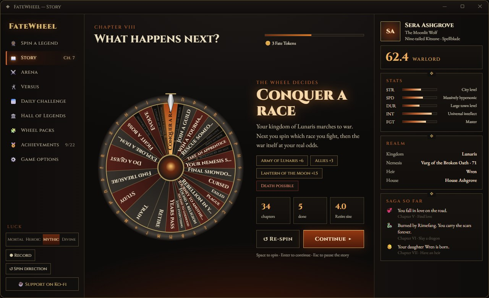
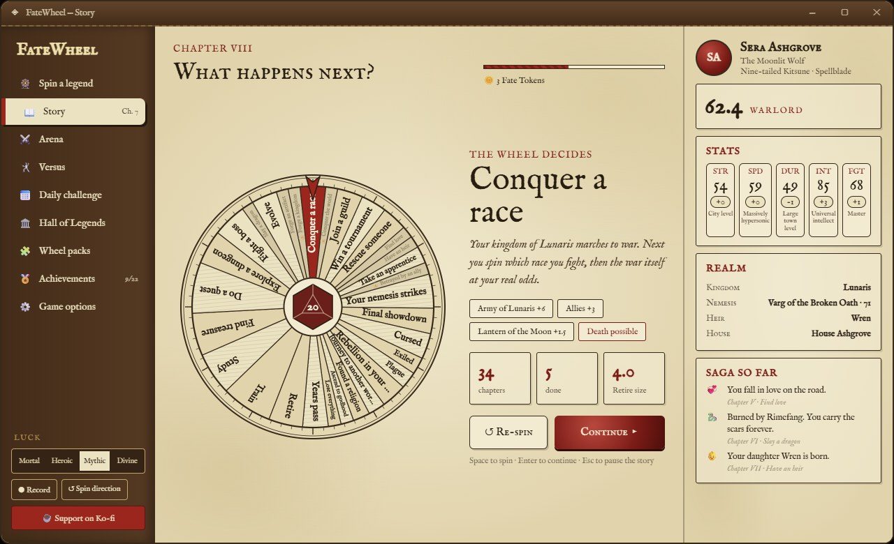
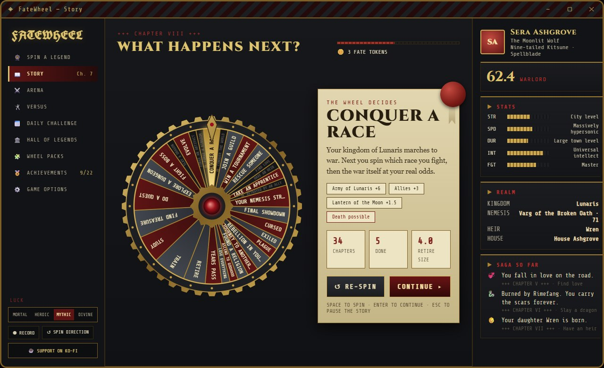
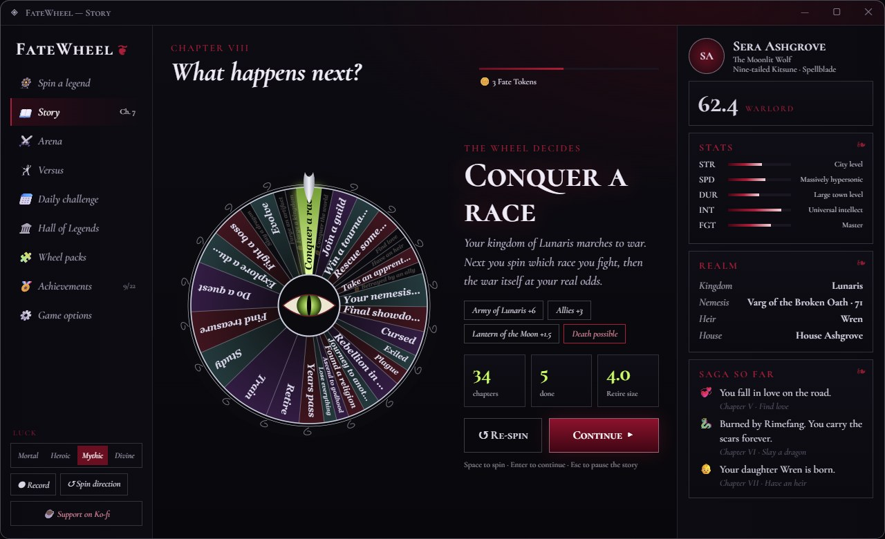

Themed mockups
Four genre directions for the desktop client: dark fantasy, a tabletop RPG character sheet, grimdark gothic sci-fi and gothic horror. Same layout and real game data as the modern set, with themed wheels, fonts and ornaments.

1 · Ashen CrownDark fantasyAsh, embers and old iron. A grim, souls-like kingdom: the wheel is forged iron ringed with glowing runes, the pointer is a blade, and the chosen slice burns like a coal.

2 · Adventurer's SheetTabletop RPGA character sheet on a game table. Parchment, ink and red wax inside a leather-bound book; the wheel is hand-inked with a d20 in its hub, and your stats are ability-score boxes.

3 · Iron LitanyGrimdark gothic sci-fiCathedral-tech in an endless war: gunmetal, oxblood and brass, blackletter titles and machine readouts. The wheel is a brass cog with a red gem, and every record carries a wax seal.

4 · Blood MoonGothic horrorA hunter's night under a red moon: black lace, cold silver and old blood. The wheel watches you with a single green eye, and every frame is drawn in thin silver filigree.
Open through a local server (for example python -m http.server in the project folder) so the pages can load the game data; fonts load from Google Fonts. Regenerate with node mockups/themed/_gen.js. Other sets: modern desktop, modern phone.